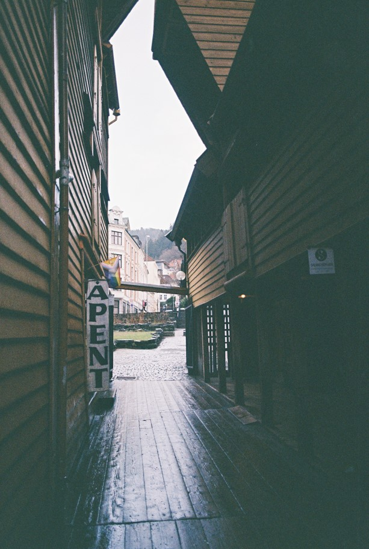

Byen er Bergen!
Jeg er overgjennomsnittlig glad i Bergen og føler jeg har mestret det å ta bilder av Bergen for å vise den fra sine beste sider. Heldigvis så gjør Bergen mesteparten av jobben for deg.
Vakre Bergen om vinteren

Av og til når det ikke regner (sjeldent) så kan Bergen by på fantastisk vær og perfekt lysforhold, spesielt hvis du er nybegynner i analog fotografi og ikke vet så mye om hvordan man bruker lysmåler enda.
Besøk Bryggen!

UNESCO-beskyttede historiske bygg fra 1700-tallet midt i smørøyet. Her kan du vandre i timesvis, besøke små lokale forretninger og ta masse bilder. Og besøke Bergen Steinsenter er et must! Uansett om du er en crystal-girlie eller bergartentusiast, er det fullt mulig å finne noe gøy. Hver gang jeg er på Bryggen så oppdager jeg noe nytt og jeg har bodd i Bergen i 7 år!